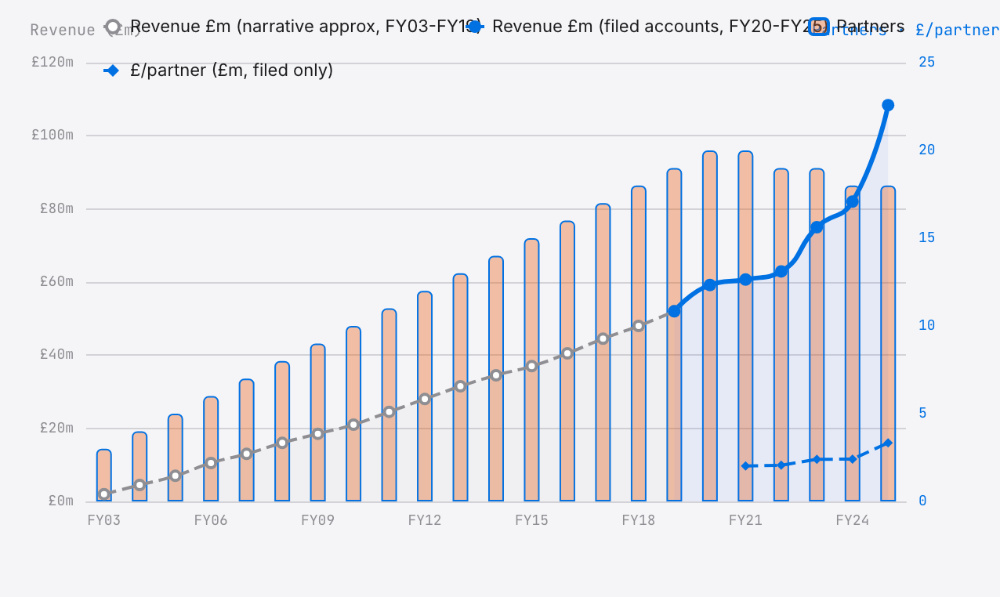

Three economists walked out of NERA London in April 2002 and set up a competition-economics boutique from scratch. 23 years later, the firm they built works out of the 11th floor of 199 Bishopsgate and pays its highest-earning partner £5.77 million a year — the largest disclosed sum in any pure-play UK economics boutique that files in full.
By the spring of 2025, RBB Economics LLP had 18 partners, revenue of £108 million, and an 11th-floor office at 199 Bishopsgate in the City. In the 12 months to 31 March of that year, the member with the largest entitlement to profit took home £5,771,775 per RBB Economics LLP note 8. No partner at a Magic Circle law firm earned more from a firm this small that year. No member at a Big Four accountancy did. The highest-paid member at A&M Europe LLP earned more in absolute terms, but A&M is a 73-member Europe-wide LLP turning over €301 million. RBB's top earner made the money from a partnership of 18 people on £108 million of revenue. From a single floor in the City.
How the number got there is a 23-year story, told through the accounts filed at Companies House since the current LLP entity (OC315356) was incorporated on 26 September 2005, stitched to the three-and-a-half-year narrative that precedes it from the founding practice's first day of trading in April 2002.
The revenue curve since inception, with the number of LLP members shown as orange bars and profit per partner as a dashed line, has three distinct phases, and each phase has its own story.

Source note. Points for FY21 to FY25 are taken directly from RBB Economics LLP filed accounts at Companies House (company number OC315356). The FY20 point (£59.2m) is the filed prior-year comparative from the FY21 accounts. Points for FY03 to FY19 are a narrative approximation built from the firm’s own published history, Global Competition Review coverage of the 2002 NERA spinout, and press reporting of partnership growth. Filed pre-FY21 accounts exist in the Companies House filing history; the FY03–FY19 curve should be read as directional rather than audited, and drift of a few million pounds at any individual point is likely. A future revision will replace the approximation with the actual filed series.
RBB was founded in April 2002 by Derek Ridyard, Simon Bishop and Simon Baker — all three formerly of NERA's London office. They took 13 other NERA staff with them, making a founding cohort of 16 economists (including Andrea Lofaro). The first year's revenue came in at roughly £2 million, which is an extraordinary number for a year-one boutique. It is also what happens when three senior partners walk out of a competitor with the client list already in hand.
Through the rest of the 2000s the firm grew steadily but not spectacularly. By the end of 2010, revenue was roughly £25 million and the partnership counted about eight. The centre of gravity was European competition policy — merger control and cartel damages — and the cases that defined the early RBB were Commission-referral mergers, in which DG COMP at Brussels asked the firm to review the economics submitted by the opposing side, and cartel follow-on damages claims in the English courts.
Through this phase, RBB was one of several boutiques jostling for work in a quietly expanding market. Oxera was bigger. Compass Lexecon, which formed in 2008, rapidly became bigger still. NERA London was still the dominant brand, at least by name. The question nobody was asking yet, because nobody yet needed to ask, was what happens to a competition-economics firm that deliberately keeps its partnership small while the market grows around it.
In 2011 two things changed at once. The first was an upheaval in the competitive field: LECG went bankrupt, scattering its European alumni, and Berkeley Research Group was founded the same year to absorb many of them. The second was that Compass Lexecon, now flush with a wider merger pipeline, began to outpace RBB on European volume. RBB's answer was not to compete on volume. It was to harden the partnership.
Over the next decade, the firm added about one new partner a year and grew revenue from roughly £25 million to roughly £60 million; profit per partner moved steadily from about £1 million to about £2 million. In the same decade, RBB did not open new offices aggressively — Helsinki, Milan, Oslo, Singapore and Sydney would all come later. It did not dilute the partnership. It did not take external investment. It did not sell to a larger group. It kept what it had.
By 2020 RBB had become a deliberately boutique firm in a market where everyone else was getting bigger. Compass Lexecon, now an arm of FTI, was an 800-plus-economist global network. Baringa had crossed £200 million of revenue and a hundred partners. Frontier was employee-owned and spreading its profit across more than 300 staff. RBB had 15 or so partners and was quietly distributing £2 million each.
FY21 to FY25 is where the chart breaks. Over those five years, revenue grew nearly 80 per cent, from £60.7 million to £108.4 million; the partnership shrank from 20 members to 18; and profit per partner rose 65 per cent, from £2.02 million to £3.34 million. The three numbers are doing different kinds of work.
A note on the break itself. Part of the visible step-change at FY21 is an accounting reclassification rather than a commercial transformation. RBB's FY20 accounts (year ended 31 March 2020) charged £41.7 million of members' remuneration as an expense above the operating-profit line, leaving zero available for discretionary division among members. The FY22 filing (year ended 31 March 2021) restated FY20 with £0 above the line, and from that point onward the whole profit-for-members has been treated as an appropriation of equity rather than a cost. After the policy change the headline operating margin jumped mechanically, even on underlying economics that had not moved. The 65 per cent growth in profit-per-partner from FY21 onward is real — revenue did grow 79 per cent, the partnership did shrink, and the distributable pool did widen — but the FY20/FY21 discontinuity visible on any historical margin chart should not be read as an overnight commercial transformation. The three decisions below did the commercial work.
How is that possible? The mechanical answer is that revenue grew faster than both costs and partnership size. The richer answer is that three decisions made in and around 2021 have quietly done all the work, and that no other firm in this market has matched them.
The first was to open five new offices in 2023 — Helsinki, Milan, Oslo, Singapore, Sydney — staffed with existing RBB partners rather than local hires, so that the firm's European footprint suddenly matched Compass Lexecon's at a marginal cost close to zero. The second was to stop promoting. A professional-services firm whose revenue grows ten per cent a year should, all else equal, take roughly ten per cent more people into the partnership every year; RBB promoted almost nobody between 2021 and 2024, and the senior associates who would have been partners at a larger firm stayed senior associates at 199 Bishopsgate. The third was to let two partners leave and decline to replace them. The partnership went from 20 members to 18, not through layoffs but through attrition that the firm chose to honour. That is the numerator story.
Combine the three moves. An 80 per cent revenue increase lands on a ten per cent smaller partnership. That is the arithmetic of £3.34 million per partner.
The clearest way to see what RBB has done is to lay the firm's five-year trajectory from FY21 to FY25 alongside Baringa Partners' — the two firms you cannot understand the UK consulting market without understanding.
| Metric | RBB FY21 | RBB FY25 | Baringa FY21 | Baringa FY25 |
|---|---|---|---|---|
| Revenue (£m) | 60.7 | 108.4 | 201.9 | 449.8 |
| Partners (LLP members) | 20 | 18 | 98 | 178 |
| Revenue per partner (£m) | 3.04 | 6.02 | 2.06 | 2.53 |
| Profit per partner (£m) | 2.02 | 3.34 | 0.90 | 0.91 |
| 5y revenue growth | +78.6% | +122.8% | ||
| 5y partner growth | −10.0% | +81.6% | ||
| 5y profit-per-partner growth | +65.3% | +1.1% | ||
Read the bottom row twice. Baringa grew its revenue faster than RBB did over the same five years; Baringa's business is in rude health. But Baringa also grew its partnership by 82 per cent. Every new partner is a smaller share of a larger pie, and in Baringa's case the arithmetic worked out almost exactly. A Baringa partner in 2025 earns roughly what a Baringa partner earned in 2021.
An RBB partner in 2025 earns 65 per cent more than an RBB partner earned in 2021. Same industry; same five years; same regulatory environment; same macro conditions. Two firms made opposite decisions about how to divide the growth.
The £5.77 million figure exists in public view because RBB chose to put it there. UK LLP rules require disclosure of the aggregate compensation of members and the number of members, but they require disclosure of the highest-paid member's share only when that member's remuneration is materially above the average for the firm. Most LLPs avoid the line item entirely by arguing that no one is materially above average.
RBB, for reasons it does not explain, files the specific figure. In FY25 the number is £5.77 million. It is the line item that generates the "highest documented profit-per-partner in UK professional services" framing used in this article, and the qualifier documented is doing work. Several Magic Circle and elite American partnerships almost certainly pay their top earners above £5.77 million. None of them discloses member-level remuneration in a form that permits a clean comparison.
The accounts do not name the recipient. The rule applies when one member's remuneration is materially above the average, and the pattern in RBB's recent filings suggests the same individual has been materially above for several years running.
How does the figure compare to the rest of the market?
| Firm / role | FY24–25 pay (£m) | Source type |
|---|---|---|
| RBB Economics, highest-paid member | 5.77 | Filed accounts, disclosed |
| A&M Europe LLP, highest-paid member | ~11.8 | Filed accounts, disclosed (EUR 14.2m) |
| Slaughter and May, equity partner (average) | ~3.5 | The Lawyer UK200 PEP reports (paywalled) |
| Kirkland & Ellis London, senior partner (estimate) | ~4–6 | American Lawyer Am Law Global 200 PPP surveys; London-specific pay not disclosed |
| Baringa Partners LLP, highest-paid member | ~11.3 | Filed accounts, derived (7% of £161.9m profit) |
| PwC UK, equity partner (average) | ~1.1 | PwC UK Annual Report FY24 (aggregate partner profit ÷ partner count) |
| Goldman Sachs London, MD base + bonus | ~1.5–3.0 | Industry estimate; no primary UK disclosure |
Sourcing note. Rows 1, 2 and 5 (RBB, A&M Europe, Baringa) are drawn directly from Companies House filed accounts. The remaining rows are industry estimates: PEP figures for UK law firms come from the annual UK200 surveys; Kirkland & Ellis does not disclose London-specific partner pay; PwC UK discloses an average partner profit figure each year in its Annual Report; the Goldman Sachs range is indicative only and not drawn from UK filings. Only the first two rows and the Baringa-derived row should be used for quantitative comparisons.
On a per-person basis, among pure-play economics boutiques that publicly file detailed accounts, this places RBB at the top — a position held by a firm with almost no public profile outside the small world of competition economics.
The RBB model is, by any measure, extraordinary. It also carries structural risks. Three of them could end it.
RBB exists because three senior partners walked out of NERA in 2002 with a client list and the nerve to use it. The lesson of that event is that a senior team can leave, and when it leaves, the clients can leave with it. A four-person departure from RBB's 18-partner structure would be a 22 per cent hit to the partnership, and if the four happen to include the leaders on the largest cases, the revenue hit is larger still. The firm's own founding is the reason this is a live risk.
And yet, in the 23 years since that founding, RBB has had none. Not one senior partner has walked out to start a rival. This is unusual in the market — nearly every other firm in our dataset has lost at least one senior economist to a new venture — and the most plausible explanation is arithmetic. At £3.34 million per partner, a spinout founder would need to build a 15-person firm simply to match the compensation already in hand. Most people do not try.
The profit-per-partner number will compress the moment RBB starts promoting heavily or recruiting senior economists from the outside. This is the Baringa story told in reverse. Every new partner is a decision by the existing partnership to accept a smaller share of the pie, and a firm with 18 members sitting around a £60 million profit pool is not going to make that decision casually.
The test case is what RBB does when a genuinely strong senior economist becomes available. In 2025 the three most prominent CMA leavers went to Keystone, Frontier, and AlixPartners, not to RBB. The signal is ambiguous. Either the firm is not bidding, or the senior people believe the closed partnership has nothing for them. Either reading is a long-term risk.
The £5.77 million line item exists because UK LLP rules require disclosure of the highest-paid member's share when one member is materially above the average. If those rules change — specifically, if they change to allow aggregate-only disclosure — the story vanishes. RBB would still be profitable. It would simply become invisible. This is unlikely in the short term, but the UK's LLP disclosure framework is under periodic review. A reform in the opposite direction — less disclosure, not more — is a political fight that nobody is waging yet. It is also exactly the kind of fight a well-resourced trade body could quietly win.
Two observations, both uncomfortable for the rest of the market.
First: the small-partnership model has turned out to be more profitable than any of its alternatives. RBB's £3.34 million profit per partner is nearly four times Baringa's £0.91 million and more than three times Frontier's employee share of profit. The model that was supposedly going out of fashion — small LLP, minimal partnership dilution, no outside capital, no sale to a larger group — is the model that has won the arithmetic over 25 years. Every firm in this market that diluted the partnership to chase scale, from Baringa to AlixPartners to the Big Four economics arms, has traded profit per head for growth. Those that refused, RBB most forcefully, have done the opposite.
Second: the private-equity story told in Part 5 of this series is a different business from the RBB story. When Cinven paid £190 million for Flint Global in December 2025, it was paying for a platform that could grow. When Phoenix Equity Partners paid £95 million for Capital Economics in 2018, it was paying for a subscription-research machine that could be leveraged. Neither deal was the RBB model, and neither can become it. You cannot ten-times a partnership that refuses to promote. The PE money flooding the bottom half of this market is buying growth-stage firms, not cash-cow partnerships. The two models will co-exist without converging.
The uncomfortable question for RBB's competitors is whether the rest of the market can tolerate being consistently out-earned by an 18-partner boutique on a single floor in the City. The CMA drain covered in Part 6 and the 2002 NERA spinout covered in Part 1 both suggest that it cannot. When senior economists see a smaller firm paying materially more per partner, the incentive to break away and replicate the model compounds with every filing year. Econic Partners' 2025 exit from Compass Lexecon is the latest case in point. The next one is already being drafted in somebody's head, and the thesis will be the same as RBB's own: an old employer too large for its people to be paid at the level RBB's accounts now show is achievable.